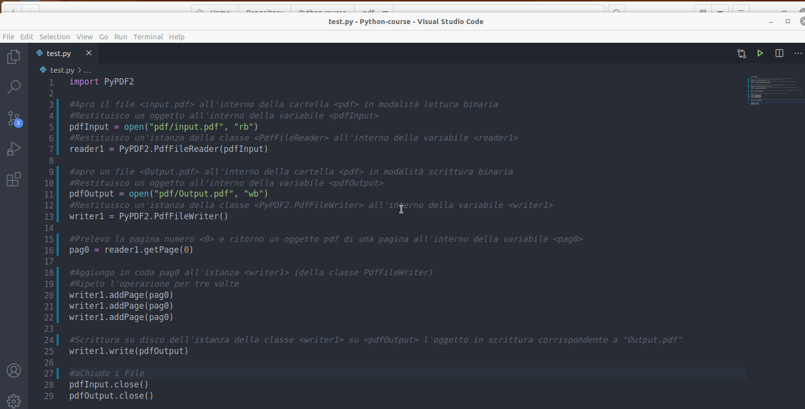

Lezione 10
Introduzione al modulo PyPDF2
Il seguente script tratterà l’elaborazione di file pdf. Saremo in grado quindi di generare un file pdf con nome predefinito “Output.pdf” che è la copia della prima pagina di un pdf con nome “input.pdf” ricevuto in input
Faremo uso del modulo aggiuntivo PyPDF2 da installare da terminale tramite il comando pip install PyPDF2
Utilizzeremo le funzioni standard Python di apertuta e chiusura file:
open(myFile, mode): apre un file e lo restituisce come oggetto.myfileindica il nome comprensivo del path del file da apriremodeindica la modalità di apertura del filemode = "r"modalità letturamode = "rb"modalità lettura binariamode = "w"modalità scritturamode = "wb"modalità scrittura binaria
close(): chiude un file aperto. È necessario chiudere sempre i file aperti poichè in alcuni casi, a causa del buffering, le modifiche apportate a un file potrebbero non essere visualizzate finché non si chiude il file.
w3schools - Python open() Function
w3schools - Python close() Function
Del modulo aggiuntivo PyPDF2 utilizzeremo le classi:
PdfFileReader(myPdf): Chiama il costruttore della classe PdfFileReader che inzializza in lettura il file oggetto pdf myPdf ricevuto come parametro e restituisce un’istanza della classe PdfFileReader
The PdfFileReader Class
Metodi
getPage(pageNumber): restituisce una pagina in base al numero pageNumber passato come parametro
PdfFileWriter(): Chiama il costruttore della classe PdfFileWriter() che inizializza in scrittura un file oggetto pdf e restituisce un’istanza della classe PdfFileWriter()
The PdfFileWriter Class
Metodi
addPage(page): Aggiunge una pagina PDF, all’istanza della classe PdfFileWriter a cui si applica il metodo. La pagina viene solitamente acquisita da un’istanza di PdfFileReader.write(myPdf): Scrive (su disco, da ram a rom) la raccolta di pagine aggiunte a questo oggetto come file PDF, riceve come parametro l’oggetto pdf da scrivere, myPdf.
Nota: Le “funzioni/classi” di un modulo devono essere invocate sempre specificando il nome del modulo.
Esempio:
import PyPDF2
pdfInput = open("pdf/input.pdf", "rb")
#PyPDF2 è il nome del modulo, PdfFileReader è il nome della classe del modulo PyPDF2
reader1 = PyPDF2.PdfFileReader(pdfInput)
Script completo
import PyPDF2
#Apro il file <input.pdf> all'interno della cartella <pdf> in modalità lettura binaria
#Restituisco un oggetto all'interno della variabile <pdfInput>
pdfInput = open("pdf/input.pdf", "rb")
#Restituisco un'istanza della classe <PdfFileReader> all'interno della variabile <reader1>
reader1 = PyPDF2.PdfFileReader(pdfInput)
#apro un file <Output.pdf> all'interno della cartella <pdf> in modalità scrittura binaria
#Restituisco un oggetto all'interno della variabile <pdfOutput>
pdfOutput = open("pdf/Output.pdf", "wb")
#Restituisco un'istanza della classe <PyPDF2.PdfFileWriter> all'interno della variabile <writer1>
writer1 = PyPDF2.PdfFileWriter()
#Prelevo la pagina numero <0> e ritorno un oggetto pdf di una pagina all'interno della variabile <pag0>
pag0 = reader1.getPage(0)
#Aggiungo in coda pag0 all'istanza <writer1> (della classe PdfFileWriter)
#Ripeto l'operazione per tre volte
writer1.addPage(pag0)
writer1.addPage(pag0)
writer1.addPage(pag0)
#Scrittura su disco dell'istanza della classe <writer1> su <pdfOutput> l'oggetto in scrittura corrispondente a "Output.pdf"
writer1.write(pdfOutput)
#aChiudo i File
pdfInput.close()
pdfOutput.close()
